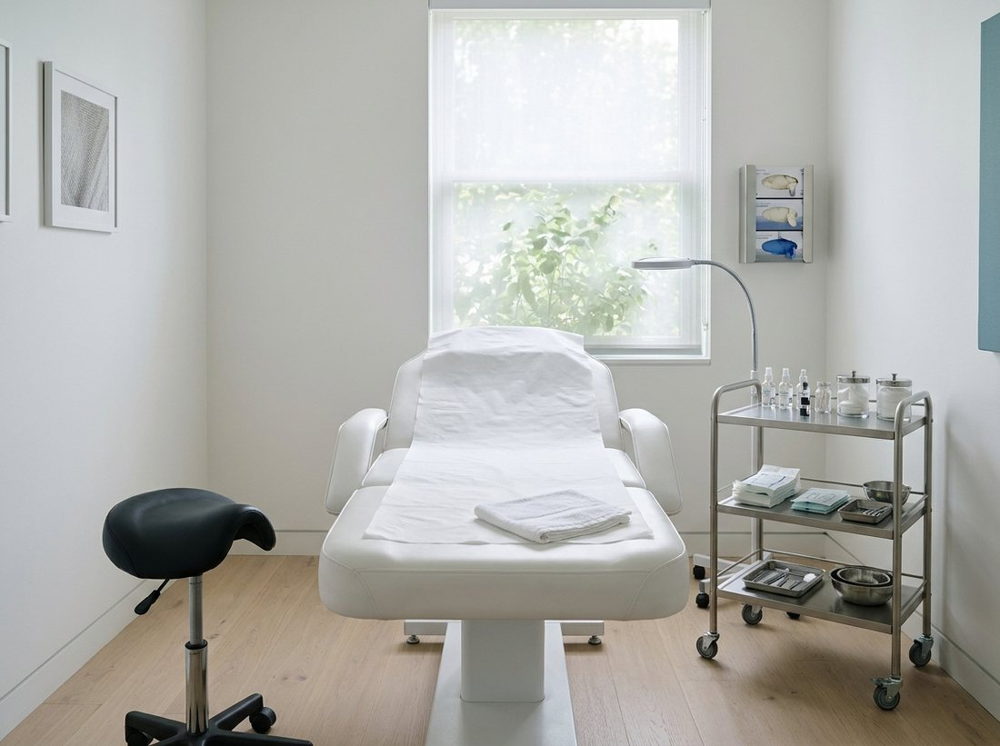
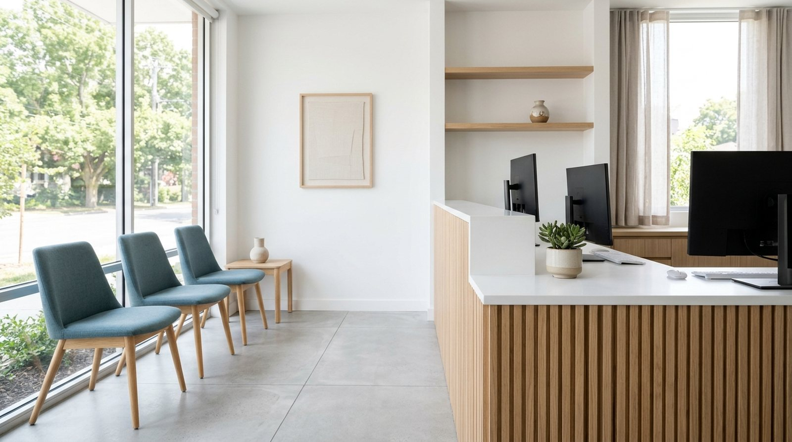
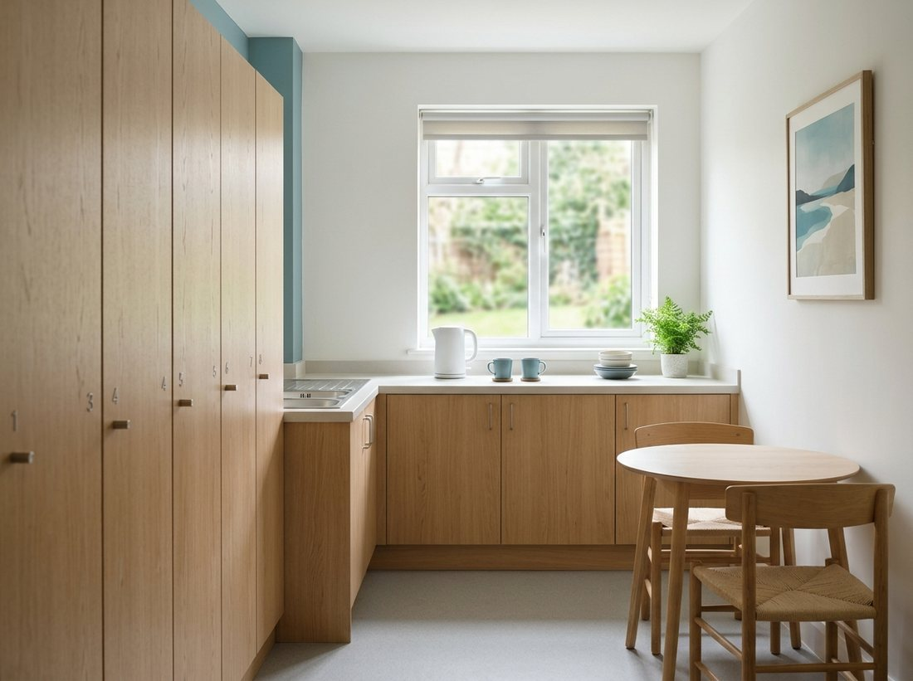

看護師・受付スタッフ 募集中!!
通いやすい院で、
関西・東海・関東
全{{stats.clinics}}院で募集中
当法人では、看護師・准看護師、受付スタッフの募集を行っております。
ご一緒に働きませんか？
{{j.tag}}
{{j.lead}}
お住まいの地方をお選びください。

最初の1か月は、先輩と同じシフトで勤務いたします。機器の扱いと受付の手順は、院ごとの手順書に沿って順に覚えていただきます。
翌月の希望を毎月15日までにお出しいただき、20日に確定いたします。パートは曜日と時間帯を固定することもできます。
全院にスタッフ用の休憩室とロッカーがございます。休憩は交代で取り、診察の合間に持ち越しません。
※正職員が平日に勤務する日の例です。
■ スタッフの声
この欄には、実際に働いているスタッフへの取材をもとにした声を掲載いたします。見本では空けております。
① ご応募フォームの送信
ご希望の職種と院を選び、ご連絡先を入力していただきます。
② 採用担当よりご連絡
3営業日以内に、お電話またはメールで面接の日程をご相談いたします。
③ 面接・院内のご見学
ご希望の院で面接を行います。院内と休憩室もご見学いただけます。
④ 条件のご確認・入職
勤務の条件を書面でお渡しいたします。内容をご確認のうえ、入職日を決めます。
必要ございません。このページから直接ご応募いただけます。採用後は、医療法人あさなぎ会が直接雇用いたします。
ご応募いただけます。看護師は免許が必要ですが、診療科の経験は問いません。受付スタッフは、資格も経験も問いません。
ご応募の際に、ご希望の院を3つまでお選びいただけます。入職後に院を変更するのは、ご本人の同意がある場合だけです。
可能でございます。ご応募フォームのご質問の欄に「見学を希望」とご記入のうえ、お送りください。
パートは週2日、1日4時間からご相談いただけます。ご希望の日数と時間を、面接でお聞かせください。
当法人では、{{jd.name}}の募集を行っております。
ご一緒に働きませんか？
※金額と条件は、見本のために置いた数字です。
■ このページからのご応募
ご応募フォームより、ご応募・お問い合わせを受け付けております。
■ お電話でのお問い合わせ
00-0000-0000（見本）
この職種は、現在どの院でも募集しておりません。
※3つまでお選びいただけます。現在募集中の院のみ表示しております。
{{ap.e.consent}}
ご応募ありがとうございました。
※見本のため、入力した内容はどこにも送信しておりません。実際のページでは、この画面のあとに次の3つが動きます。
院の台帳を1か所直すと、ページの募集職種、勤務地のご案内、募集要項、ご応募フォームの選択肢に同時に反映されます。募集を止めたい院のボタンを押して、ページに戻って確かめてください。
同じ台帳から、検索サービスが読み取る形式のデータも作ります。下は、今ページに出ている募集のうち1件ぶんの例です。
{{admin.jsonld}}
「現行の意匠」と「提案する意匠」の違いは、次の8つです。色・書体・箱やボタンの形は、どちらも同じです。上の切り替えで、同じページを見比べられます。
医療法人あさなぎ会
見本のための架空の法人です。
写真は、見本のために作成した画像です。
掲載内容の更新日 {{stats.updated}}